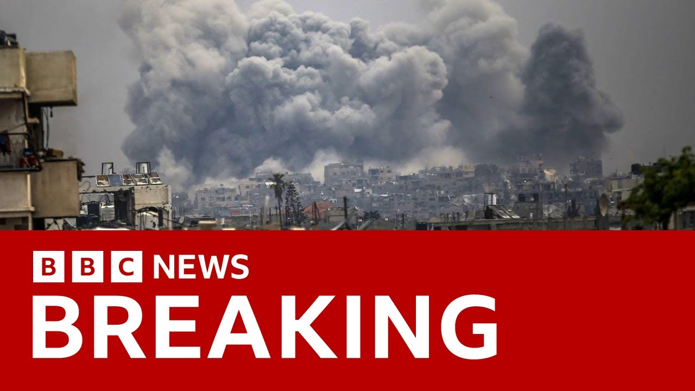

【最新消息：以色列对加沙发动新攻势，旨在控制部分地区。军方称已实施大规模空袭并动员部队，同时向加沙北部投放传单要求巴勒斯坦人撤离。巴勒斯坦当局称，周五加沙北部100人死亡，自周四上午以来死亡人数超250人。这是以色列自3月恢复攻势以来对加沙北部的最大规模地面进攻。以军称过去24小时打击了加沙地带150多个“恐怖目标”。联合国人权事务高级专员沃尔克·图尔克谴责以色列加剧轰炸，称其意图永久驱逐人口，构成种族清洗。】
Summary: To the latest now on the Israel Gaza war.
摘要： 关于以加战争的最新进展。

⏱️ Estimated Reading Time: 8 min
And Israel has begun a new offensive aimed at taking control of parts of Gaza.
以色列发动新攻势，旨在控制加沙部分地区。
The military said it had carried out extensive strikes and was mobilizing troops.
军方称已实施大规模空袭并动员部队。
Israel also dropped leaflets across northern Gaza, telling Palestinians to leave the area.
以色列还向加沙北部投放传单，要求巴勒斯坦人撤离。
On Friday, 100 people were killed in northern Gaza, according to Palestinian authorities, with more than 250 people killed since Thursday morning.
巴勒斯坦当局称，周五加沙北部100人死亡，自周四上午以来死亡人数超250人。
It marks the largest ground assault on northern Gaza since Israel resumed its offensive in March.
这是以色列自3月恢复攻势以来对加沙北部的最大规模地面进攻。
The IDF says it struck what it called more than 150 terror targets throughout the Gaza Strip over the past 24 hours.
以军称过去24小时打击了加沙地带150多个“恐怖目标”。
Meanwhile, the United Nations Human Rights Chief Vulca Turk has condemned Israel for its escalating bombardments of Gaza, saying it's apparently seeking to permanently displace the population and that this amounts to ethnic cleansing.
联合国人权事务高级专员沃尔克·图尔克谴责以色列加剧轰炸，称其意图永久驱逐人口，构成种族清洗。
While our correspondent Wira Davis is in Jerusalem with the latest.
本台记者维拉·戴维斯在耶路撒冷带来最新报道。
Well, it's no surprise this has been threatened.
这一行动早有预兆。
This had been promised by the Israeli Prime Minister Benjamin Netanyahu that this enhanced advanced military push into Gaza would happen.
以色列总理内塔尼亚胡曾承诺将加强军事推进加沙。
What we've seen all week actually is steadily increasing Israeli military activity in Gaza that culminated in Friday and the biggest uh military operation we've seen uh for a couple of months now.
过去一周以军在加沙的军事行动持续升级，周五达到顶峰，成为数月来最大规模行动。
That was uh an assault from sea, land, and air in northern Gaza.
这是对加沙北部的海陆空联合袭击。
And overnight the IDF, the Israeli military has said that Operation Gideon's chariots, that's as it's been called, is now basically underway.
以军夜间宣布，“基甸战车行动”已正式展开。
And that is part of a push which involves thousands of Israeli reservists as well as regular soldiers planning to go into Gaza to occupy much of Gaza and remain there and to push much of the Gazan population towards the south of the territory.
该行动动员数千预备役及正规军，计划占领加沙大部并长期驻守，同时迫使加沙民众南迁。
Um the goal says Israel is to finally defeat Hamas once and for all and to secure the release of the remaining hostages.
以色列称目标是彻底消灭哈马斯并解救剩余人质。
But it's been much criticized uh not just here in Israel uh because of course the concerns about what that might mean uh for the remaining hostages but also by uh many governments around the region and around the world uh in so far also as the humanitarian crisis as we know in Gaza is steadily worsening.
但该行动在以色列内外均遭批评，既因可能危及人质安全，也因加沙人道危机持续恶化引发国际谴责。
So the the latest reports we've had this morning are that Israeli military operations on the ground are happening in central Gaza around Albala.
今晨最新报道称，以军地面行动已推进至加沙中部阿尔巴拉地区。
According to reports from Gaza's civil defense agency, there have been several deaths this morning um in Israeli air strikes.
加沙民防机构称，今晨以军空袭已致多人死亡。
So at least 250 people killed over the last couple of days as this operation Gideon's chariots gets underway.
“基甸战车行动”展开以来，过去两天至少250人丧生。
You mentioned the aid situation.
你提到援助问题。
There were these reports of an alternative US back proposal to deliver aid to Gaza.
有报道称美国拟通过替代方案向加沙运送援助。
And I found it quite interesting that President Trump in an interview with Fox News even saying that a lot of people are starving.
值得注意的是，特朗普总统接受福克斯新闻采访时直言许多人正在挨饿。
Yeah.
是的。
Well, look, Israel is coming under increasing pressure from its allies um governments around the region to lift uh the embar uh this embargo, this blockade that has been in place now for more than 10 weeks.
以色列正面临盟友及地区国家越来越大的压力，要求解除已持续10周的封锁。
No food, no fuel, no medicines have been allowed in.
目前食品、燃料和药品均被禁止进入。
There is an impending famine, say says the UN.
联合国警告饥荒迫在眉睫。
In Gaza, hundreds of thousands of people are facing starvation because of the of the lack of food.
加沙数十万人因食物短缺面临饥荒。
Um, and there is pressure not just from uh the UN, but from governments like the US.
压力不仅来自联合国，还有美国等政府。
Uh Donald Trump said last night a lot of people are starving.
特朗普昨夜称许多人正在挨饿。
Uh has to be taken care of.
必须解决这一问题。
The American Secretary of State Marco Rubio said he was troubled by the humanitarian situation in Gaza.
美国国务卿马可·卢比奥称对加沙人道局势感到忧虑。
The UN says it's ready.
联合国表示已做好准备。
It has tens of thousands of tons of aid waiting on the borders to go in and to be distributed.
数万吨援助物资已在边境待命等待分发。
But Israel has, according to many in the Israeli government, lost confidence in the UN and it's trying to organize a separate mechanism, an Americanbacked private initiative to get aid in.
但以政府许多人对联合国失去信任，正试图建立美国支持的私人援助机制。
But the UN says, "What is the point that those people don't have the facilities on the ground that we do?
但联合国质疑：“那些机构不具备我们的地面设施，有何意义？”
Let the UN take care of this.
应让联合国处理此事。
Let the World Food Program. let the World Health Organization take care of this.
让世界粮食计划署和世卫组织负责。
They're ready and happy to do it, but thus far, Israel has been resisting those calls uh to allow aid in and to ease the humanitarian crisis in Gaza.
这些机构乐意效劳，但以色列迄今仍拒绝允许援助进入以缓解加沙人道危机。
There was, I know it was faint hope with Donald Trump in the region that there may be some progress on the ceasefire talks.
特朗普到访时，停火谈判曾有一线希望。
That hope has gone away now.
如今希望已破灭。
It hasn't been completely extinguished.
但尚未完全消失。
My understanding is that Israeli negotiators remained in Doha overnight, but you're right, Donald Trump has left the region.
据悉以方谈判代表仍在多哈，但特朗普已离开该地区。
The understanding was that this uh new ceasefire proposal, the Witito plan, would only really be on the table for the duration of Donald Trump's visit to the Middle East.
外界认为“维蒂托计划”停火提案仅在特朗普访问中东期间有效。
There are elements of the plan which aren't agreeable either to Hamas or to the Israelis.
该提案部分内容哈马斯和以色列均不同意。
And all of the noises we're getting through back channels are that there's been no progress at all in the ceasefire talks.
幕后渠道消息显示停火谈判毫无进展。
In many ways, it's a tragedy because in the previous ceasefire, dozens of Israeli hostages were released, hundreds of Palestinians were freed from Israeli jails, aid was getting back into the Gaza Strip, and people were allowed to move back towards their home areas.
此前的停火期间，数十名以色列人质获释，数百名巴勒斯坦人离开以监狱，援助重返加沙，民众得以返乡。
Then that uh process was abandoned by the Israelis.
但以色列放弃了这一进程。
the hostilities uh resumed and we are where we are now with no real hopes of the ceasefire resuming and the resumption or the start of this operation Gideon's chariots, this big Israeli military offensive in Gaza.
敌对行动重启后，停火希望渺茫，“基甸战车”大规模军事行动随之展开。